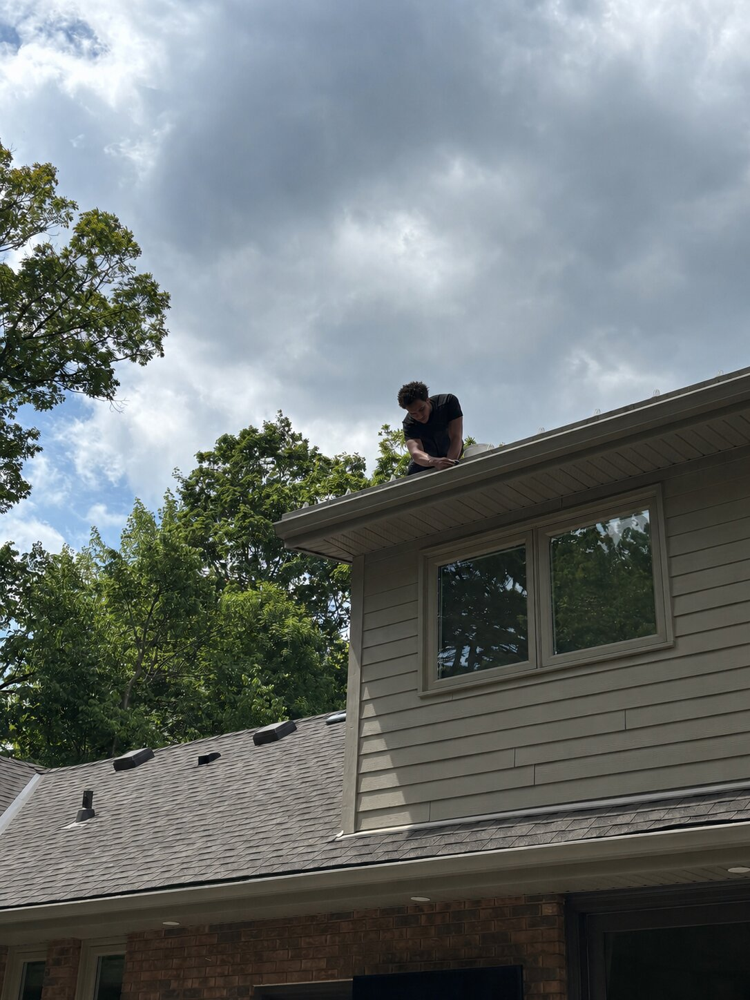

Leaves, seed pods and grit build up whether you notice or not — a clogged eavestrough overflows right where you least want water: at your foundation and fascia.
We clear debris from the full run, flush downspouts to confirm water is actually draining (not just clearing the trough), and flag anything else we notice — a loose hanger, a failing joint, early rust — while we're already up there.
If you're not comfortable doing this yourself — or you'd simply rather not be the one up there — a seasonal clean-out is a low-cost way to avoid a bigger repair down the line. If you're dealing with constant leaf buildup, it may also be worth looking at gutter guards to cut down how often cleaning is needed.

More project photos added as jobs are completed.